I work with big pieces of fabric for project bags, but in the process, I get a lot of offcuts. These pieces are too small on their own, but still very beautiful, dyed with colors I extract from plants. Plant-dyed colors are perfect for that — they complement each other perfectly and can make up endless combinations.
What you need
Start with fabric scraps in four to five complementary colors with good contrast. Avoid mixing lightweight and heavyweight fabrics. You'll need a sewing machine, iron, rotary cutter, scissors, ruler, and cutting mat. Create a paper pattern of your target size before beginning.
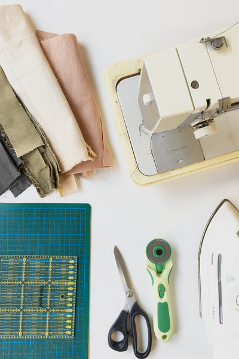
Trim the scraps
Unless you start with super neat offcuts, you will need to trim them. I always make sure both sides of the piece are parallel to each other. This makes planning and sewing easier. Orthogonal patterns are recommended for beginners over diagonal approaches.
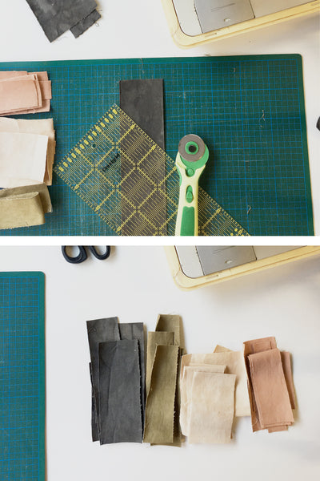
Arrange the patches
Build small blocks incrementally, adding one piece at a time. When putting the blocks together, try to make sure no scraps of the same color lie next to each other. Never position more than three fabric edges together when working with heavyweight canvas, as this creates excessive bulk. Leave several centimeters around your pattern for seam allowance.
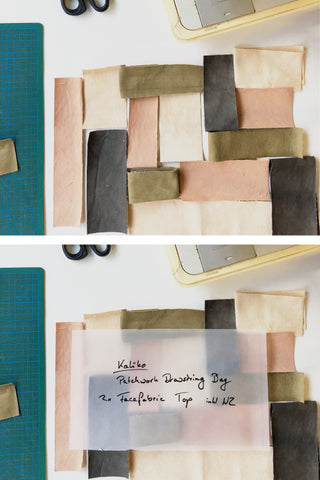
Plan the sewing sequence
Roughly cut scraps with scissors, allowing extra length. Map out which pieces connect and in what order they'll be sewn together.
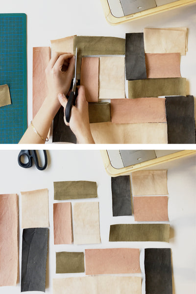
Start with the smallest block
Begin with the smallest pieces, placing right sides together along the edges that will become seams.
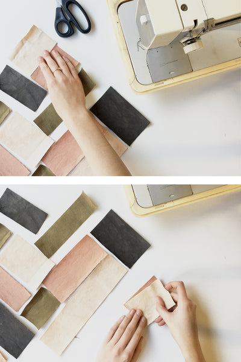
Sew the pieces together
Sew around 0.5cm from the edge (0.25 inch). You don't have to backstitch your seams — they will be held by the consecutive seams.
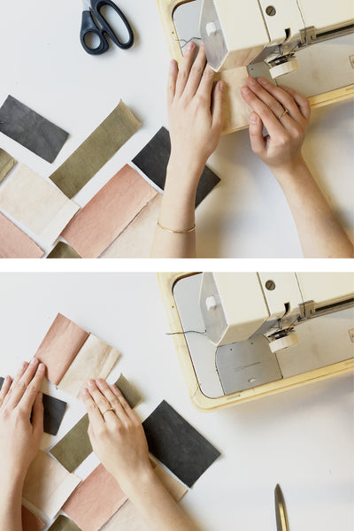
Press the seams
Press seams flat and open after each stitching round. This crucial step prevents pattern distortion and maintains proper alignment for subsequent patches.
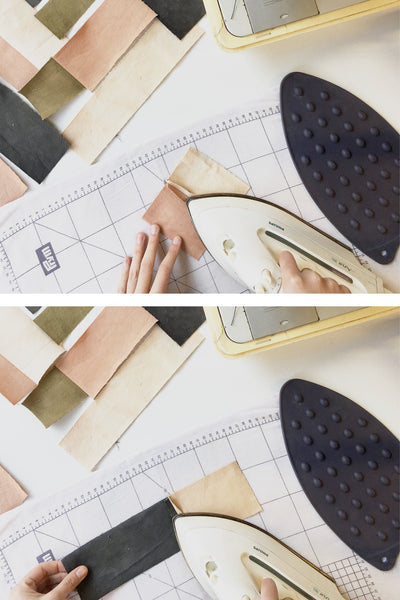
Keep the pieces straight
Trim sewn sections to maintain straight edges after adding each scrap.
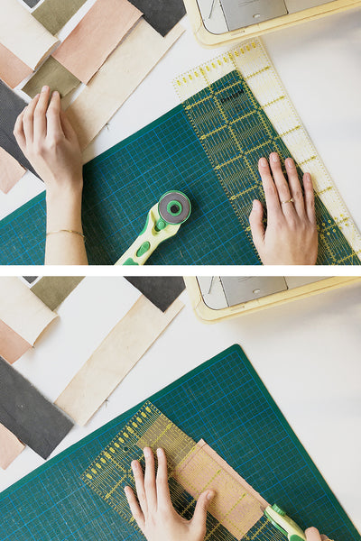
Always add one patch at a time
Place the new piece underneath, keeping previous seams facing upward to ensure they remain flat during stitching.
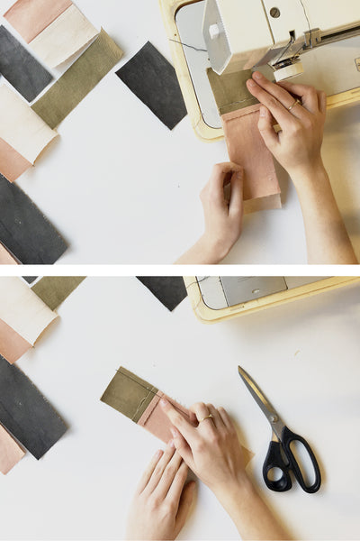
Keep extending the blocks
Continue adding pieces sequentially. Iron after each stitching round and trim before adding the next patch.
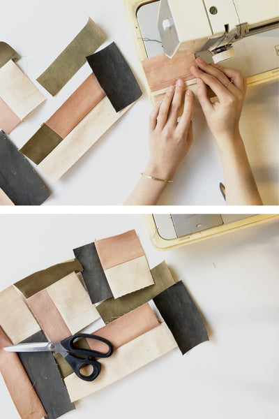
Many seams later
Complete all main blocks before connecting them together.
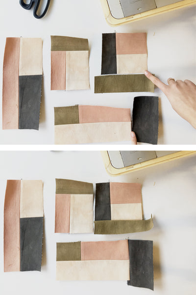
Connect the main blocks
Join blocks in the predetermined sequence: top middle and right corner first, then bottom block, finally the left block.
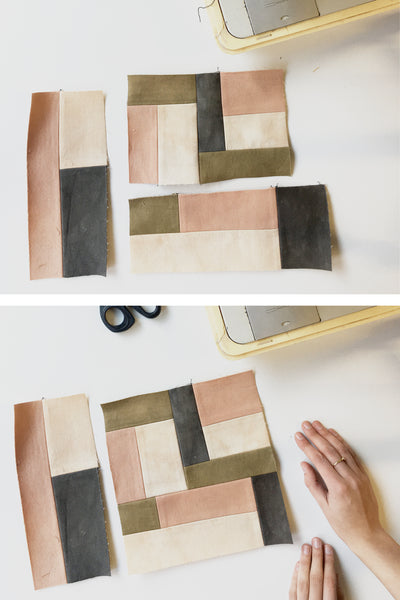
Finishing the patchwork
Press all seams flat one final time. They should lay smoothly without creating bulk on the front side.
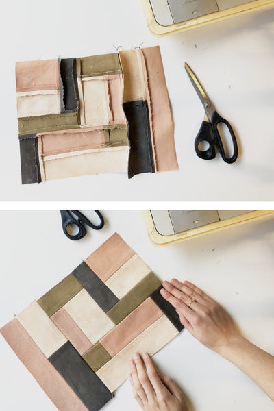
Troubleshooting
If the piece is too narrow when checked against the pattern, add additional scraps in colors not yet used to extend it appropriately.
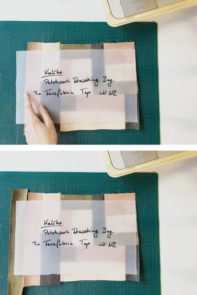
Cut to the pattern
Use tracing paper to position the pattern, placing seams away from edges before cutting to final dimensions.
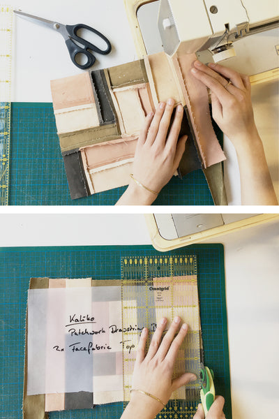
And done
Create a matching piece for the opposite side using the same color palette. Choose complementary fabric for the bag bottom and drawstring tunnel.
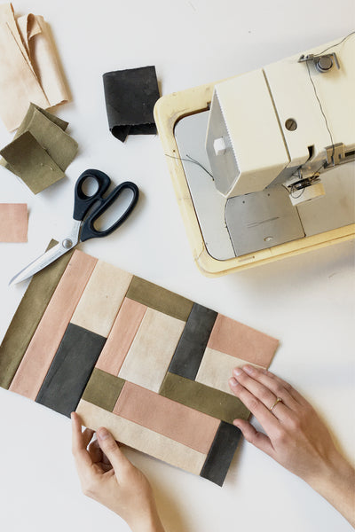
The finished bag
It is not only zero-waste but also vegan, and 100% natural. Materials include organic cotton canvas dyed with plants, unbleached linen lining, organic hemp webbing handles, organic cotton thread, and flax string drawstrings. An extension strap enables crossbody carrying.
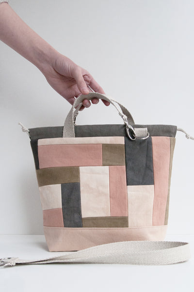